FalseNine
From broadcast video to tactical insight: find the players and the ball, follow them, put them on a pitch in metres, then measure what the teams actually do.
Fine-tuned to stop seeing ghosts
YOLO11m trained at 1280 px, because the ball is only about 20 px wide. The big win is fewer false boxes.
Pretrained vs fine-tuned (test split)
Accuracy by class (AP50)
Training evidence (click to zoom)
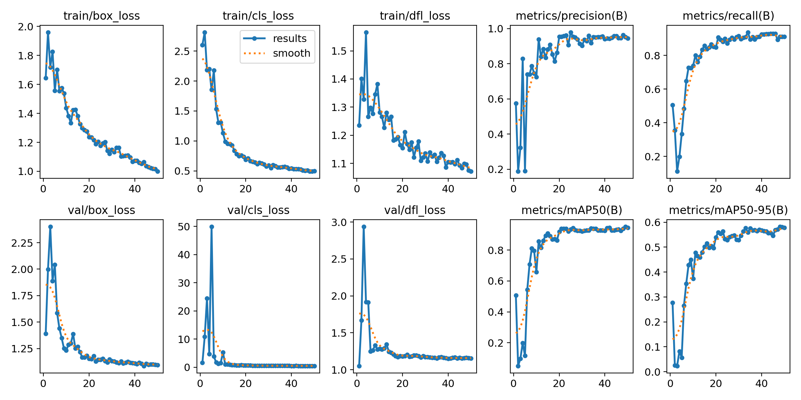
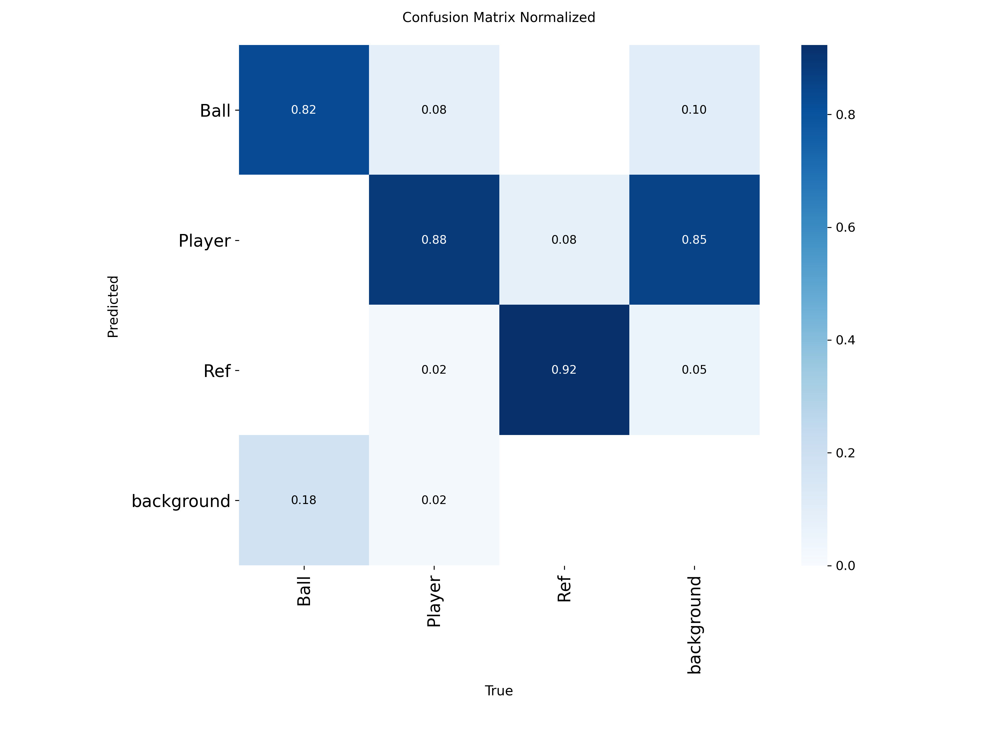
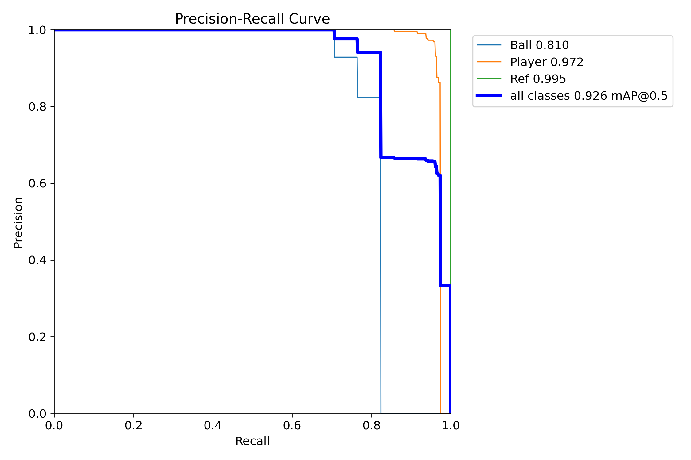
Same person, same number
ByteTrack gives everyone an ID; shirt colour splits the teams. This clip is from a different match than the training data.
Tracker settings compared
Summary and one photo per tracked person
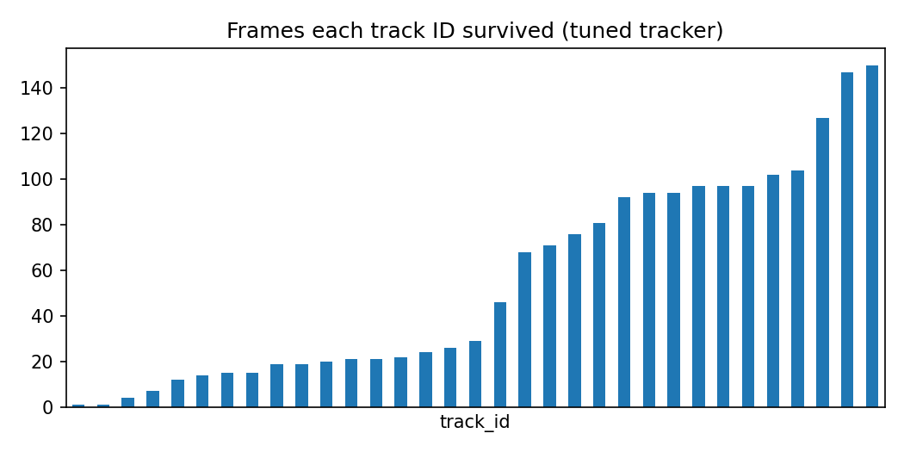
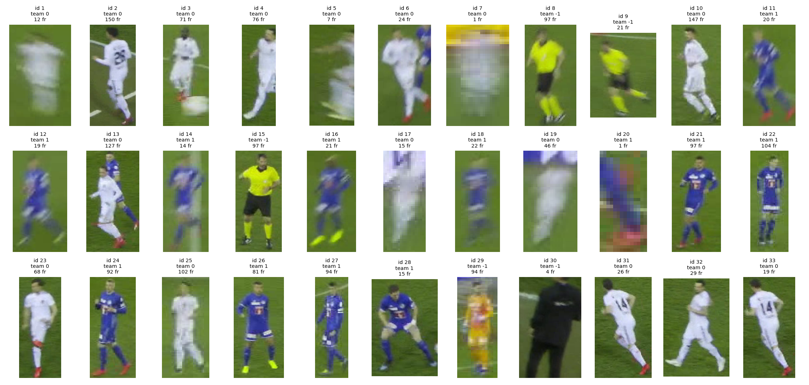
The model's “Ref” label did not transfer to this match (it called blue-shirt players referees), so people are grouped by shirt colour, not by the model's class.
From pixels to metres
A homography maps the image onto the pitch plane. With a known calibration the error is about a third of a metre; tracking the camera afterwards drifts.
Drift when only frame 1 is calibrated
Ground truth vs ours
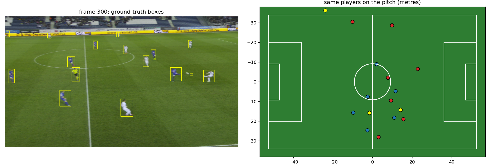
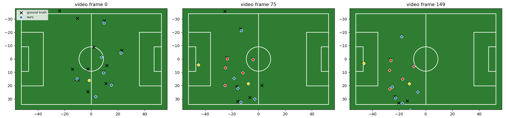
Camera-tracking variants
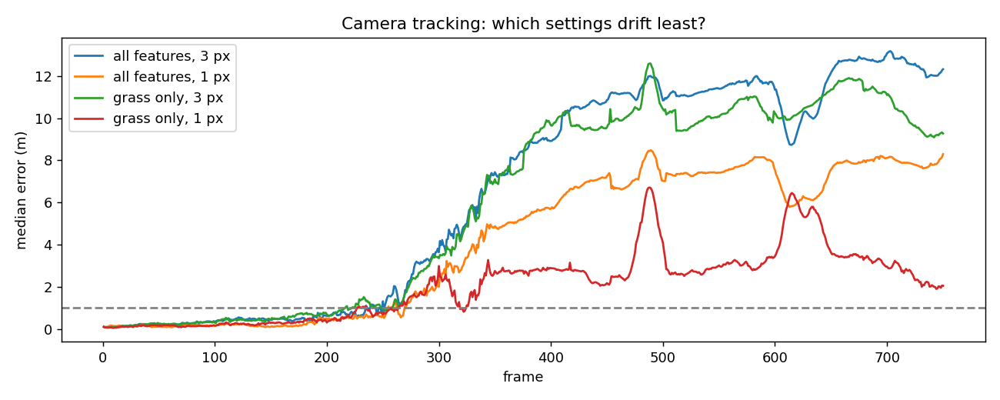
What the teams actually do
Real 25 Hz tracking data. Replay the match, then look at workload, team shape and space.
Replay
Player workload
Team shape over the match
With the ball vs without it
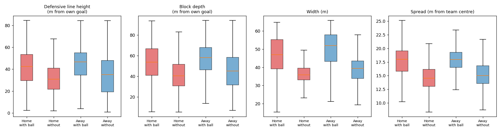
Who controls the space?
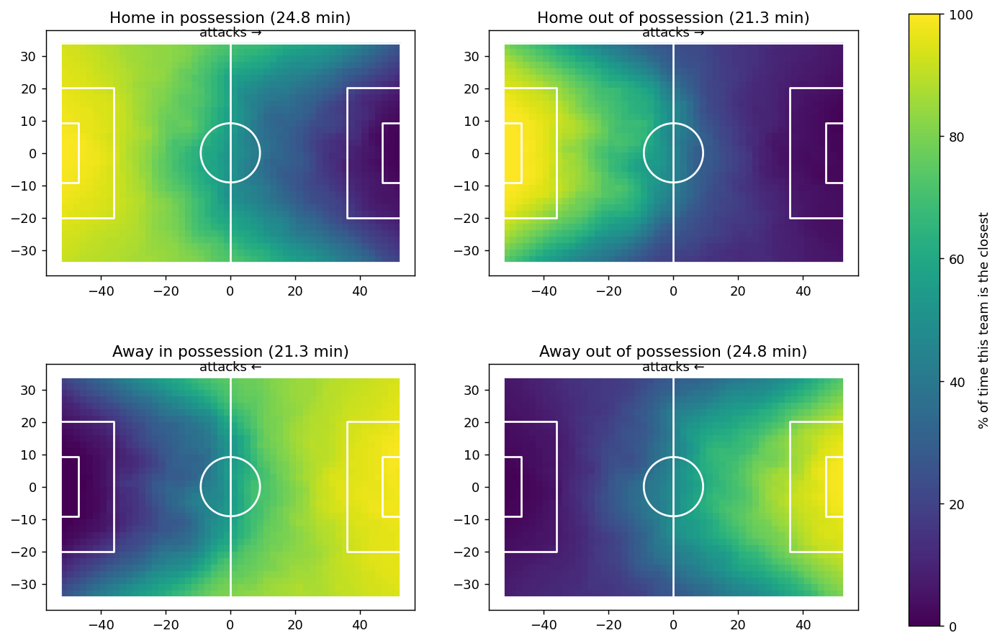
Shape after losing the ball
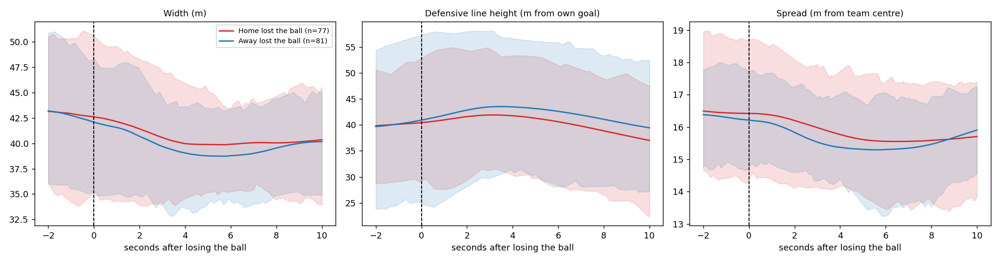
What not to over-read
- Detection scores come from a 19-image test set taken from the same match as training, so they are optimistic.
- Tracking works in image space, so IDs break when the camera pans fast (33 IDs for roughly 25 real people).
- Frame 1 is calibrated from ground-truth labels; after that the camera is tracked automatically: under 1 m for about 11 s, then 2–3 m.
- Tactical findings come from one sample match; the gap between the teams is small next to the spread within each state.
- Space control is a nearest-player map. It ignores speed and the ball.
- Possession and ball-in-play come from the events file with simple rules.
Data and credits
- Detection images: Roboflow Universe, soccer-players-ckbru (CC BY 4.0)
- Video clips and pitch annotations: SoccerNet Game State Reconstruction
- Tracking and event data: Metrica Sports sample data (check their repository licence)